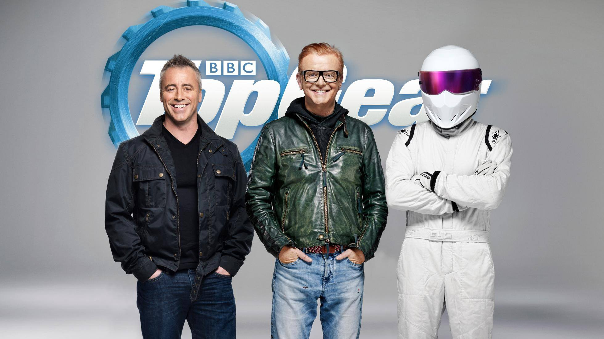
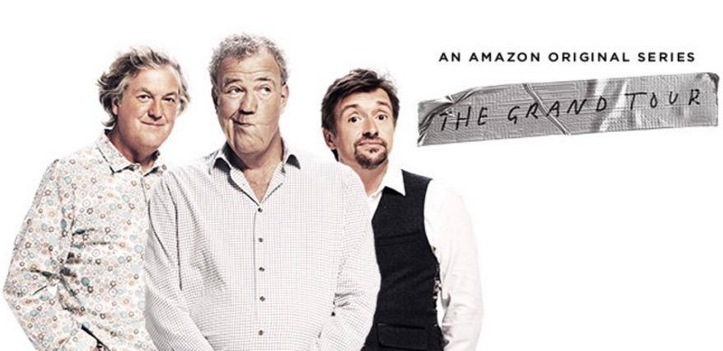

And On That Bombsh…
Published: 11th June, 2016
Just two episodes into the new Top Gear and I don’t hate it!

With a lot of bad reviews on social media, mainly surrounding Chris Evans, I didn’t have high hopes for the show. Despite this I sat myself down and watched the show, to see for myself if the new season of Top Gear was any good.
I have to say it wasn’t too bad, and I actually laughed a fair bit in both of the episodes I’ve watched.
I think what helped in making the show work with the new presenters is the new format and them making light jokes regarding the old running of the show. A few favourites of mine have been ‘We’ve got custody’ which refers to The Stig and ‘On that bombsh… NO! We don’t do that anymore!’.
Just a side note on the ‘And on that bombshell’ ending, I do prefer it to the one they do now. It just works so well.
The change up in the Star In The Reasonable Priced Car, which has now been named ‘Star In A Rallycross Car’, gives a new feel to the old show. I love the addition of the off-road parts in the new track!
Now am I no car enthusiast, which might come as a shock seen as Top Gear is a car show, but I watch the show for the challenges and the comedic parts. I have found that it has continued to cater for those two things. A challenge in both episodes, can’t ask for much more that that.
Probably the biggest thing to adjust to is the main presenters Chris Evans and Matt LeBlanc. I’m actually not too bothered by the new presenters as they’ve settled into the role really well. Chris Evans shouty voice compared to Matt’s quieter voice is going to take a little time to get used to but it’s not a total turn off for me.
Even though Eddie Jordon and Sabina Smitt are part of the new Top Gear team, I would have liked to have seen a third presenter working alongside Chris Evans and Matt LeBlanc in the studio all the time. I feel this would have helped the flow between Chris and Matt.
It is a little weird not seeing Jeremy Clarkson, Richard Hammond and James May presenting the show but I’m keeping an open mind about the new Top Gear.
So far the season hasn’t disappointed me.
I’m eager to see how the new Top Gear compares with Amazon Primes car show ‘The Grand Tour’ starring former Top Gear presenters Jeremy Clarkson, Richard Hammond and James May. No matter how it compares I do really think it’s great having two car shows for people to watch and enjoy.

What are your thoughts on the new Top Gear?
Top Gear is a British television series about motor vehicles which is currently airing on Sundays at 8pm on BBC Two.